import pandas as pd
import numpy as np
import matplotlib.pyplot as plt
from sklearn.preprocessing import StandardScaler
from sklearn.decomposition import PCA
import umap
from joblib import Parallel, delayed
import os
import hdbscan
# Load datasets
land = pd.read_csv("C:/Users/mcmur/OneDrive/Documents/GitHub/Math-4810_Capstone/data/MLS_Land_Sales.csv")
residential = pd.read_csv("C:/Users/mcmur/OneDrive/Documents/GitHub/Math-4810_Capstone/data/MLS_Land_Sales.csv")
puma = pd.read_csv("C:/Users/mcmur/OneDrive/Documents/GitHub/Math-4810_Capstone/data/PUMA2.csv")
family = pd.read_csv("C:/Users/mcmur/OneDrive/Documents/GitHub/Math-4810_Capstone/data/Multi-Family_MLS_Export.csv")PCA and UMAP
File Prep
Land Prep
# Drops Unwanted Columns
DROP_COLS = [
# IDs / Keys
"List Number", "Parcel Number", "Tax Serial #", "Parcel ID Check",
"St. #", "Address", "Address 2", "Postal Code", 'Street Name', 'Street Direction Sfx', 'Street Suffix',
# Agents / Agencies / PII
"Agency Name", "Agency Phone", "Agency Email",
"Listing Agent", "Listing Agent Phone", "Listing Agent Email",
"Co-Listing Agent",
"Selling Agency", "Selling Agency Phone", "Selling Agency Email",
"Selling Agent", "Selling Agent Phone", "Selling Agent Email",
"Co-Selling Agent", "Owner", 'Financing Remarks',
# URLs / Metadata
"Photo URL", "mod_timestamp", "Card Format", "Book Section",
# Directions / Remarks that are mostly noise
"Directions", "Private Remarks",
# Post-sale info
"Status Change Date", "Withdrawal Date",
"Cancel Date", "Fallthrough Date", "Concessions4",
# Too Complicated to deal with at the moment
"End Date", "Marketing Begin Date", "Lot Dimensions", "Rooms",
"Features", "Bsmt % Finish", "Public Remarks",
# Uniform Variables
"Delayed Marketing Exempt Listing", # N Only
"State/Province", # Utah Only
"Status", # C Only
"Property Type", # Residential Only
# Dates
'Listing Date', 'Under Contract Date', 'PUD', 'Sold Date', 'Contingent Remarks'
]
land = land.drop(columns=[c for c in DROP_COLS if c in land.columns])Family
# Columns Being Dropped
DROP_COLS = [
# IDs / PII / Agents
"List Number", "Agency Name", "Agency Phone", "Agency Email",
"Listing Agent", "Listing Agent Phone", "Listing Agent Email",
"Co-Listing Agent", "Selling Agency", "Selling Agency Phone",
"Selling Agency Email", "Selling Agent", "Selling Agent Phone",
"Selling Agent Email", "Co-Selling Agent", "St. #", "Street Name",
"Street Direction Sfx", "Street Suffix", "Address 2",
"Parcel Number", "Owner", "Tax Serial #", "Photo URL",
"mod_timestamp", "Card Format", "Book Section", "Directions",
"Private Remarks", "Postal Code",
# Post Sell
"Status Change Date", "Withdrawal Date", "Cancel Date", "Fallthrough Date",
"Sold Price Per/SqFt",
# Noisy text
"Contingent Remarks", "Public Remarks", "Rooms",
"Financing Remarks", "Utilities", "Features",
# Don't Want to fix at the Moment
"End Date", "Lot Dimensions", "Marketing Begin Date",
"Delayed Marketing Exempt Listing", "Concessions Available",
# Uniform
"Property Type", # MultiFamily Only
"Status", # Only C
"State/Province", # Only Utah
"For Sale or Rent", # All are for sale
"Senior Community", # No Senior Community
"Listing Type", # All ER
"HOA Dues", # All Monthly
# Dates
'Listing Date', 'Sold Date', 'Under Contract Date'
]
family = family.drop(columns=[c for c in DROP_COLS if c in family.columns])Residential
DROP_COLS = [
# IDs / PII / Agents / Metadata
"List Number","Agency Name","Agency Phone","Agency Email",
"Listing Agent","Listing Agent Phone","Listing Agent Email","Co-Listing Agent",
"Selling Agency","Selling Agency Phone","Selling Agency Email","Selling Agent",
"Selling Agent Phone","Selling Agent Email","Co-Selling Agent","St. #",
"Street Name","Street Direction Sfx","Street Suffix","Address 2","Parcel Number",
"Owner","Tax Serial #","Photo URL","mod_timestamp","Card Format","Book Section",
"Directions","Private Remarks", "Postal Code",
# Post Sell
"Sold Date","Status Change Date","Withdrawal Date","Cancel Date",
"Fallthrough Date","Sold Price Per/SqFt","Concessions Amount",
# Noisy Could Use with work
"Contingent Remarks","Public Remarks","Financing Remarks","Utilities","Features", "Rooms",
# Don't want to fix yet
"End Date", "Lot Dimensions", "Marketing Begin Date",
"Concessions4",
# Uniform
'Property Type', # Residential Only
'Status', # C only
'State', # Utah Only
"Delayed Marketing Exempt Listing", # N Only 1 missing
'Listing Date', 'Under Contract Date', 'PUD', 'Parcel ID Check', 'Address',
'St. Dir.'
]
# Drop columns safely
residential = residential.drop(
columns=[c for c in DROP_COLS if c in residential.columns]
)PUMA
DROP_COLS = [
'MLS #', 'Sold Date', 'Sold Concessions', 'Tax ID', 'Address', 'List Number', 'Photo URL', 'Accessability', 'GLA', 'Adjusted SP'
]
puma = puma.drop(columns=[c for c in DROP_COLS if c in puma.columns])datasets = {
"family": family,
"land": land,
"puma": puma,
"residential": residential
}
for name, df in datasets.items():
print(f"\n{name} columns:")
print(df.columns.tolist())
family columns:
['Type', 'Contingent', 'Original List Price', 'List Price', 'Sold Price', 'How Sold', 'MLS Area', 'St. Dir.', 'City', 'County', 'Finished SqFt', 'Year Built', 'Lot Acres', 'Total Units', 'Parking Covered', 'Covered Parking', 'Parking Uncovered', 'Zoned', 'Total Taxes', 'Subdivision', 'Concessions', 'HOA', 'Square Foot Source', 'PUD', 'Laundry', 'Elementary', 'Jr. High', 'Sr. High', 'HOA Dues $', 'Special Taxes (SID)$', 'HOA Dues Frequency', 'Owner/Agent', 'Concessions Amount', 'Days on Market']
land columns:
['Sub Type', 'Contingent', 'Original List Price', 'List Price', 'Sold Price', 'How Sold', 'MLS Area', 'St. Dir.', 'City', 'County', 'Total SqFt', 'Basement SqFt', 'Main SqFt', 'Upstairs SqFt', 'Year Built', 'Lot Acres', 'Total Bedrooms', 'Full Baths', 'Half Baths', 'Garage Type', 'Zoned', 'Total Taxes', 'Subdivision', 'For Sale or Rent', 'HOA', 'Basement', 'Fireplaces', 'Square Foot Source', 'Elementary', 'Senior Community', 'Jr. High', 'Sr. High', 'Listing Type', 'Sold Price Per/SqFt', 'HOA Dues $', 'Garage Capacity', 'Special Taxes (SID)$', 'Lofts', 'Concessions', 'HOA Dues Frequency', 'Owner/Agent', 'Concessions Amount', 'Concessions Available', 'Days on Market', 'Fireplaces2', 'Kitchens', 'Laundry', '3/4 Baths', 'Full Baths3', 'Road Condition', 'Accessability']
puma columns:
['Sold Price', 'Basement SqFt', 'Year Built', 'Lot Acres', 'Total Bedrooms', 'Full Baths', 'Half Baths', 'Garage Type', 'Zoned', 'Subdivision', 'Parcel Number', 'Garage Capacity', 'Bsmt % Finish', 'Fireplaces2', 'Kitchens', 'Laundry', 'Concessions4', 'Road Condition']
residential columns:
['Sub Type', 'Contingent', 'Original List Price', 'List Price', 'Sold Price', 'How Sold', 'MLS Area', 'City', 'State/Province', 'County', 'Total SqFt', 'Basement SqFt', 'Main SqFt', 'Upstairs SqFt', 'Year Built', 'Lot Acres', 'Total Bedrooms', 'Full Baths', 'Half Baths', 'Garage Type', 'Zoned', 'Total Taxes', 'Subdivision', 'For Sale or Rent', 'HOA', 'Basement', 'Fireplaces', 'Square Foot Source', 'Elementary', 'Senior Community', 'Jr. High', 'Sr. High', 'Listing Type', 'HOA Dues $', 'Garage Capacity', 'Special Taxes (SID)$', 'Lofts', 'Concessions', 'HOA Dues Frequency', 'Owner/Agent', 'Concessions Available', 'Days on Market', 'Bsmt % Finish', 'Fireplaces2', 'Kitchens', 'Laundry', '3/4 Baths', 'Full Baths3', 'Road Condition', 'Accessability']PCA
def prepare_numeric_matrix(df, var_thresh=1e-4):
"""
Converts a dataframe into a numeric matrix for PCA/UMAP:
- Fills missing values (median for numeric, 'Missing' for categorical)
- One-hot encodes categorical variables
- Drops near-zero variance features
- Standardizes features
"""
df = df.copy()
# Numeric / categorical
num = df.select_dtypes(include=np.number).fillna(df.select_dtypes(include=np.number).median())
cat = df.select_dtypes(exclude=np.number).fillna("Missing")
# One-hot encode categoricals
X = pd.get_dummies(pd.concat([num, cat], axis=1), drop_first=True)
# Drop near-zero variance
variances = X.var()
keep_cols = variances[variances > var_thresh].index
X = X[keep_cols]
# Standardize
scaler = StandardScaler()
X_scaled = scaler.fit_transform(X)
return X_scaled, X.columns.tolist()def reduce_with_pca(X, n_components=None, variance_threshold=0.9, show_scree=True, title="PCA Scree Plot"):
"""
Reduces dimensionality using PCA and optionally shows scree plots.
Parameters:
-----------
X : array-like
Numeric matrix (scaled)
n_components : int or None
Number of PCA components to keep. If None, use variance_threshold
variance_threshold : float
Cumulative explained variance ratio threshold if n_components is None
show_scree : bool
If True, plots scree and cumulative variance plots
title : str
Title prefix for plots
Returns:
--------
X_pca : ndarray
PCA-transformed matrix
pca : PCA object
Fitted PCA model
"""
# Fit PCA to all components first
pca_full = PCA(n_components=None)
pca_full.fit(X)
evr = pca_full.explained_variance_ratio_
cumvar = np.cumsum(evr)
# Decide how many components
if n_components is None:
n_components = np.searchsorted(cumvar, variance_threshold) + 1
# Fit PCA with selected components
pca = PCA(n_components=n_components)
X_pca = pca.fit_transform(X)
# Scree plots
if show_scree:
plt.figure(figsize=(8,4))
plt.plot(range(1, len(evr)+1), evr, marker='o')
plt.axvline(n_components, linestyle='--', color='red', label=f"{n_components} PCs")
plt.xlabel("Principal Component")
plt.ylabel("Explained Variance Ratio")
plt.title(f"{title} - Scree Plot")
plt.legend()
plt.show()
plt.figure(figsize=(8,4))
plt.plot(range(1, len(cumvar)+1), cumvar, marker='o')
plt.axhline(variance_threshold, linestyle='--', color='green', label=f"{variance_threshold*100:.0f}% Variance")
plt.axvline(n_components, linestyle='--', color='red', label=f"{n_components} PCs")
plt.xlabel("Principal Component")
plt.ylabel("Cumulative Explained Variance")
plt.title(f"{title} - Cumulative Variance")
plt.legend()
plt.show()
return X_pca, pcaUMAP
def run_umap_cluster(X, n_neighbors=15, min_dist=0.1, n_components=2, metric='euclidean', plot=True, title="UMAP"):
"""
Runs UMAP and HDBSCAN clustering:
- Returns embedding coordinates and cluster labels
- Plots 2D embedding colored by clusters
"""
# UMAP
reducer = umap.UMAP(
n_neighbors=n_neighbors,
min_dist=min_dist,
n_components=n_components,
metric=metric,
random_state=42
)
embedding = reducer.fit_transform(X)
# HDBSCAN clustering
clusterer = hdbscan.HDBSCAN(min_cluster_size=10)
labels = clusterer.fit_predict(embedding)
# Plot if 2D
if plot and n_components == 2:
plt.figure(figsize=(8,6))
plt.scatter(
embedding[:,0],
embedding[:,1],
c=labels,
cmap='Spectral',
s=10,
alpha=0.7
)
plt.title(f"{title} (HDBSCAN clusters)")
plt.xlabel("UMAP 1")
plt.ylabel("UMAP 2")
plt.colorbar(label="Cluster")
plt.show()
return embedding, labelsProcessing
results_dict = {}
# Optional: define PCA components per dataset (None = auto based on variance)
pca_components = {
"family": None,
"land": None,
"puma": None,
"residential": None
}
for name, df in datasets.items():
print(f"\nProcessing dataset: {name}")
# Prepare numeric matrix
X_scaled, features = prepare_numeric_matrix(df)
# PCA pre-reduction + scree plots
X_pca, pca_model = reduce_with_pca(
X_scaled,
n_components=pca_components.get(name),
variance_threshold=0.9,
show_scree=True,
title=f"PCA: {name}"
)
# UMAP + clustering
embedding, labels = run_umap_cluster(
X_pca,
n_neighbors=20,
min_dist=0.1,
n_components=2,
title=f"UMAP: {name}"
)
results_dict[name] = {
"X_scaled": X_scaled,
"X_pca": X_pca,
"embedding": embedding,
"cluster_labels": labels,
"features": features,
"pca_model": pca_model
}
Processing dataset: family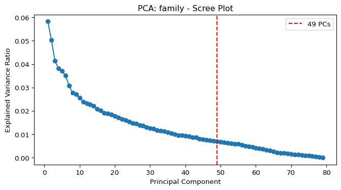
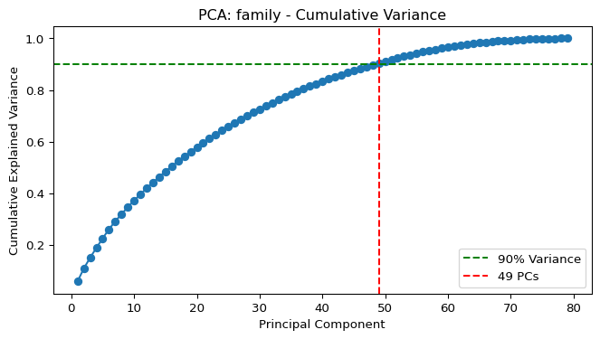
C:\Users\mcmur\AppData\Local\Programs\Python\Python313\Lib\site-packages\umap\umap_.py:1952: UserWarning: n_jobs value 1 overridden to 1 by setting random_state. Use no seed for parallelism.
warn(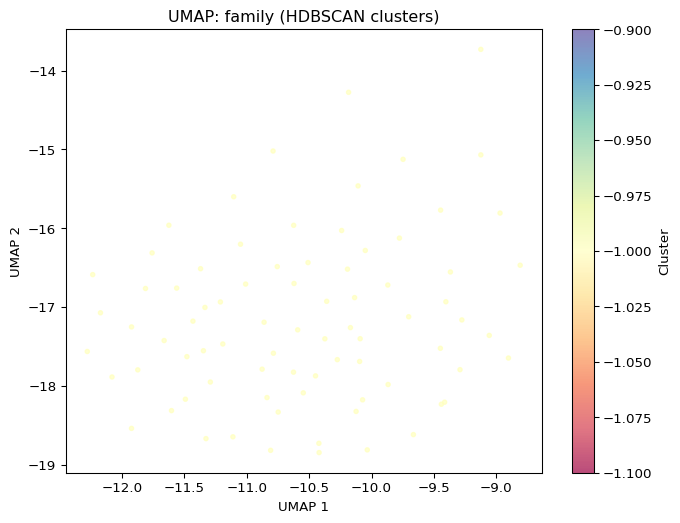
Processing dataset: land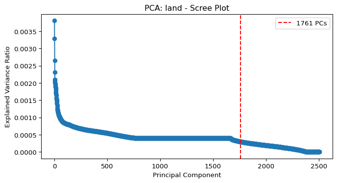
C:\Users\mcmur\AppData\Local\Programs\Python\Python313\Lib\site-packages\umap\umap_.py:1952: UserWarning: n_jobs value 1 overridden to 1 by setting random_state. Use no seed for parallelism.
warn(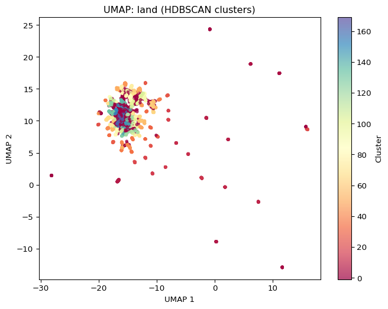
Processing dataset: puma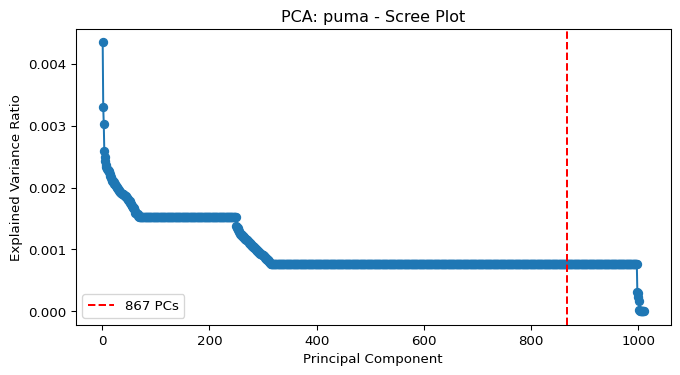
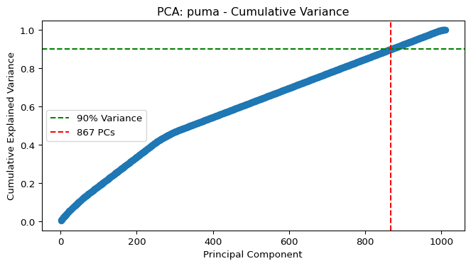
C:\Users\mcmur\AppData\Local\Programs\Python\Python313\Lib\site-packages\umap\umap_.py:1952: UserWarning: n_jobs value 1 overridden to 1 by setting random_state. Use no seed for parallelism.
warn(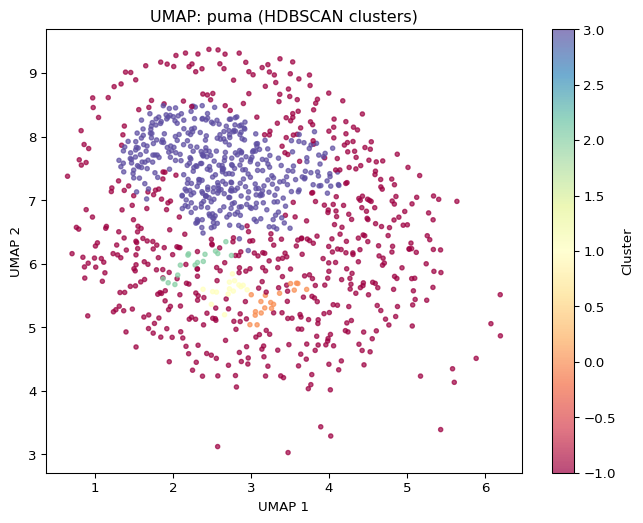
Processing dataset: residential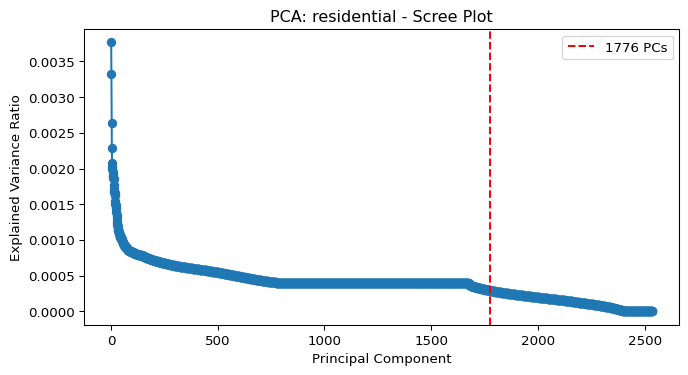
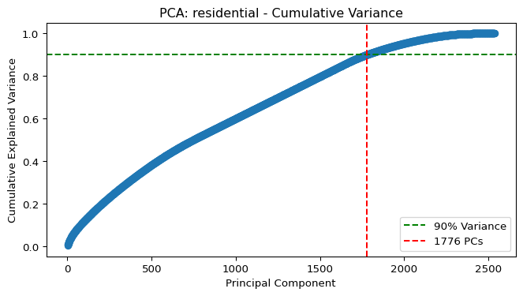
C:\Users\mcmur\AppData\Local\Programs\Python\Python313\Lib\site-packages\umap\umap_.py:1952: UserWarning: n_jobs value 1 overridden to 1 by setting random_state. Use no seed for parallelism.
warn(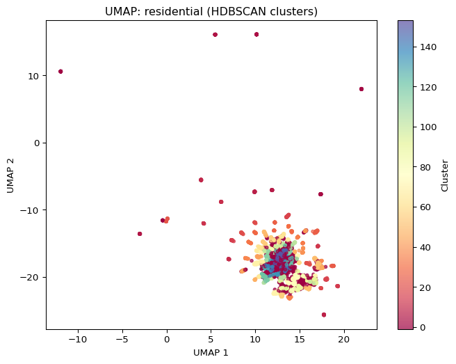